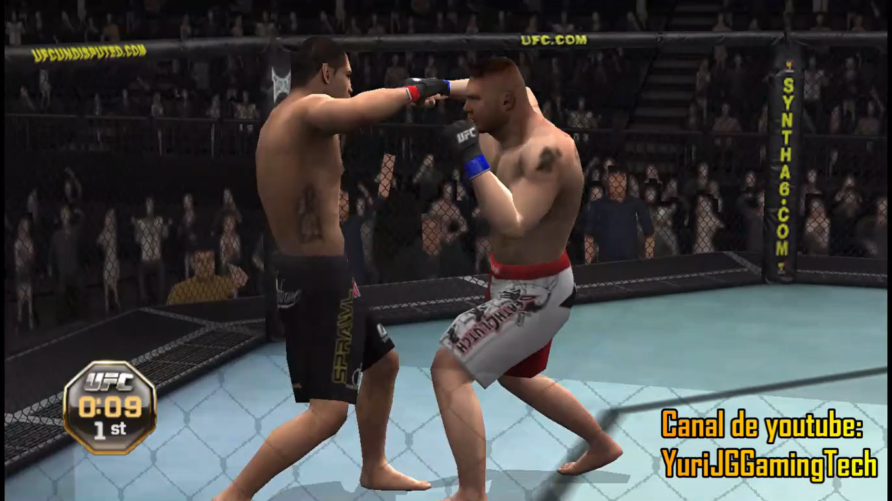
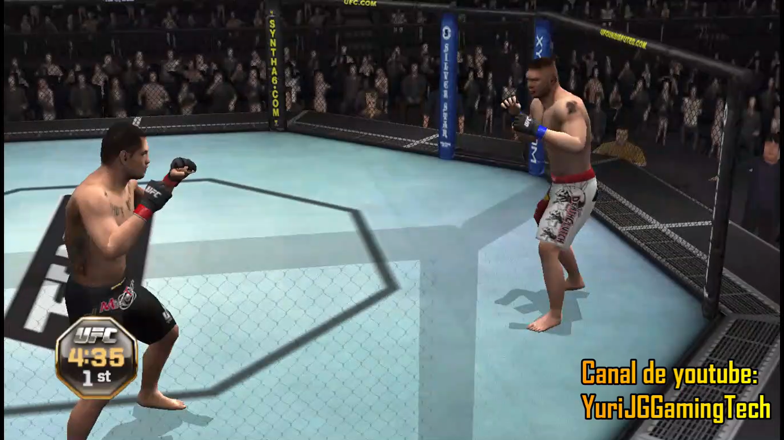
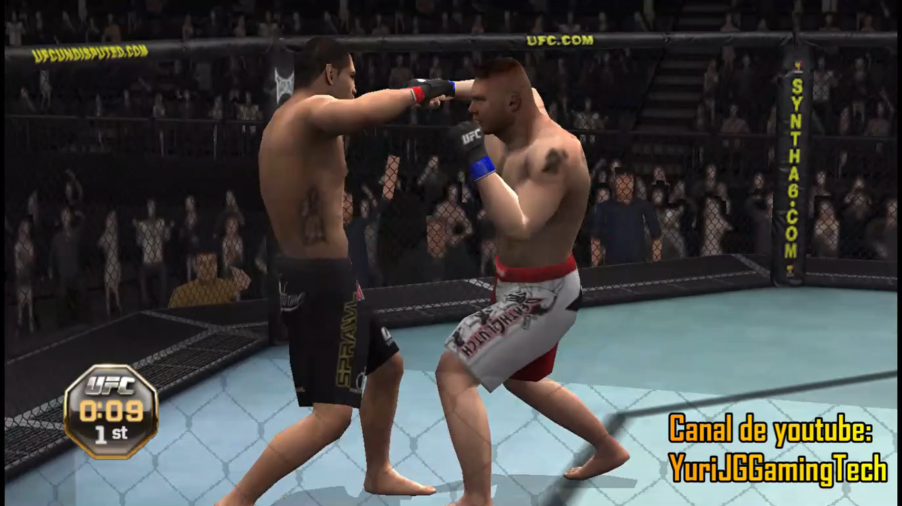
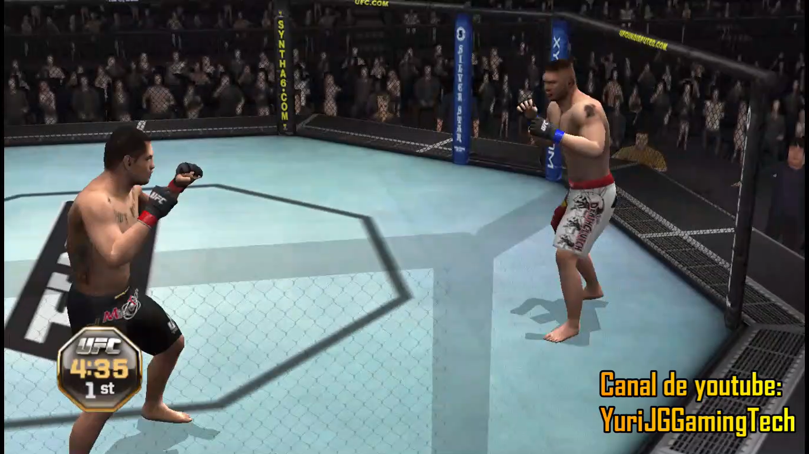

Descarga UFC Undisputed 2010 para pc con emulador PPSSPP


UFC Undisputed 2010 es el único videojuego de artes marciales mixtas (MMA) de este año que ofrecerá la acción, la intensidad y el prestigio del Ultimate Fighting Championship. Los jugadores navegarán por una lista incomparable de más de 100 prolíficos luchadores de UFC, cada uno de los cuales está totalmente representado para transmitir una apariencia fotorrealista. El combate mejorado traerá mayor autenticidad y más personalización, a medida que los jugadores manejen el control del octágono con nuevos golpes, presentaciones, transiciones, posiciones de jaula y más. UFC Undisputed 2010 fomentará la camaradería en línea como nunca antes, brindando a los jugadores la capacidad de formar campos de batalla y ligas, entrenar como luchadores UFC de la vida real y conectarse para competir contra otros campamentos en el mundo virtual de UFC. Además de un modo de carrera ampliado, UFC Undisputed 2010 también presentará tres nuevos modos de juego que incluyen el modo de título, el modo de defensa de título y el modo de torneo.
Da un paso, accede al octógono en UFC Undisputed 2010, y comprueba si puedes llegar a ser el mejor de los mejores. UFC Undisputed 2010 incluye la auténtica acción de las artes marciales mixtas con los mejores luchadores del mundo.Después de una ronda con todas las nuevas características y mejoras en las llaves, irás adquiriendo la esencia y el espíritu de un verdadero luchador. ¿Estás listo para ser uno de ellos? UFC Undisputed 2010 llega un año mas a tu PS3 con la lucha más emocionante y real . La versión PlayStation 3 del juego contará con tres luchadores "legendarios" exclusivos: Royce Gracie, Dan Severn y Jens Pulver. Además el juego contará con un modo "Luchas Clásicas" mejorado, sobre la base del mismo modo del año anterior, permitiendo que con cada combate de leyenda se desbloquee nuevo contenido.
 



Hacer click debajo:
UFC Undisputed 2010